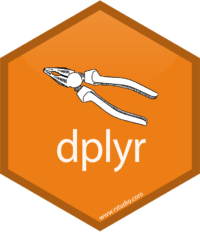

Chapter 2 R For Data Science
“In Data Science there’s always a human in the loop: someone is understanding the insight, seeing the figure, or benefitting from the conclusion.”
— David Robinson, Variance Explained Blog
That person can be called a Data Scientist.
2.1 What Is Data Science?
Data Science is a discipline that uses statistics, data analysis, machine learning and their related methods to understand and analyze actual phenomena.
It employs techniques and theories of mathematics, statistics, information science, and computer science, in particular the subdomains of machine learning, classification, cluster analysis, uncertainty quantification, computational science, data mining, databases, and visualization.
According to Wikipedia:
Data Analysis is a descriptive process of inspecting, cleansing, transforming, and modeling data with the goal of discovering useful information, suggesting conclusions, and supporting decision-making.
Data Mining is a particular data analysis technique for discovering patterns in large data sets. It focuses on modeling and knowledge discovery for predictive rather than purely descriptive purposes.
Data Modeling is a process used to define and analyze the data requirements needed to support business processes within information systems in organizations.
Business Intelligence comprises the strategies and technologies used by enterprises for the data analysis of business information to provide historical, current and predictive views of business operations.
R is used in two associated disciplines, which are often confused as also being Data Science:
Machine Learning (ML) gives computer systems the ability to progressively improve performance of a specific task with data, without being explicitly programmed, and
Artificial Intelligence (AI), in contrast to the natural intelligence displayed by humans and other animals, is intelligence demonstrated by machines through Intelligent Agents that perceive their environment and take actions to maximize the chance of successfully achieving their designers’ intended goals.
Although they overlap, Data Science, Machine Learning, and Artificial Intelligence produce different outcomes:
- Data Science produces insights
- Machine Learning produces predictions
- Artificial Intelligence produces actions
2.2 What Is R?
R is a functional programming language designed to manipulate, display, and analyse statistical data.
R is a free, case-sensitive, interpreted language that uses statistical techniques to perform Data Analysis, Data Mining, Data Modeling, and Machine Learning, and to create Artifical Intelligence and Business Intelligence.
- R is a functional programming language, not procedural.
- It is vector-based and highly-optimised to speedily and efficiently manipulate and display all types of numeric and graphical data.
- R holds data in memory for speedy access, so it runs
- better on fast processors with lots of memory for large datasets
- but can be run on an distributed cluster running Apache Hadoop, either
- on a local network or on a Hadoop cloud service.
- R was developed from S, which was created in 1976 by John Chambers of Bell Labs.
- It was written by Ross Ihaka and Robert Gentleman at the University of Auckland, New Zealand.
- The name R comes partly from the names of the two authors, and partly as a play on S.
- R was conceived in 1992 with an initial version released in 1995, and a stable beta version in 2000.
- While there are some important differences, most S code can run unaltered in R.
- R is currently being actively developed by the R Development Core Team, which includes John Chambers.
- Development of R is supported by the R Project for Statistical Computing.
- R is freely available under the GNU General Public License. Pre-compiled binary versions are provided for various operating systems. These are available on local CRAN mirrors.
The source code for the R software environment is written primarily in C, Fortran, and R, highly-optimised for fast computation of large collections of statistical data.
The popularity of R has increased substantially in recent years. As of March 2018, R is in the top 20 of the TIOBE index, (Python was ranked #4 at that time).
2.3 Installing R
R must be installed on a computer as currently it is not included in any operating system. Precompiled versions are available for major systems including Windows, MacOS, and Linux. It may require compiling on some Linux distributions.
R is available from the Comprehensive R Archive Network (CRAN), via a multinational network of CRAN Mirrors. Canadian CRAN mirrors are hosted at:
Precompiled versions are available for:
- Download for Linux (SFU)
- Download for OS X (SFU)
- Download for Windows (SFU)
2.4 Command Line R
R can be run from the command line in a Terminal window:
which R– find the location of the R executableR --version– show the currently installed version of RR– start an interactive R session
Version information is shown (as above) and the R command prompt > is available.
quit()– quit an R session**
2.4.1 Help and Manuals
Help is available in the usual way with
R --helpDownloadable manuals for R are available in HTML, PDF, and EPUB formats.
The LaTeX or Texinfo sources of the latest version of these documents are contained in every R source distribution, in the subdirectory
doc/manualof the extracted archive.The HTML versions of the manuals are also part of most R installations, accessible by entering the function
help.start()at the R prompt to launch a page in your default Web browser with links to local R documentation.Manuals for older R versions are available in the archives of the R sources.
2.5 The R Console Interface
While R has a command line interface, a graphical interface is installed as an executable application R.app or R.exe for Windows, MacOS, and Linux. With minor platform differences, they are similar to this startup screen on OS X:
Above: The R Console startup screen in OS X 10.11.6 El Capitan
R commands can be run from the command prompt in R Console, similar to using the command line interface in a terminal program.
2.5.1 Access To R Help
Tooltip help appears on hovering the cursor over the icons in the Toolbar along the top of the Console window. Access to R Help files is invoked by entering help.start() at the command prompt. This will launch the R Help server on your computer and open a comprehensive Help page in your Web browser.
> help.start()
starting httpd help server ... done
If the browser launched by '/usr/bin/open' is already running, it is
*not* restarted, and you must switch to its window.
Otherwise, be patient ...
> Above: The R Language Help page opens in your default Web browser
2.5.2 Data File Management
An R installation includes a treasure-trove of statistical data files. These can be seen using the Data Manager, available under the Packages & Data menu. Clicking on a dataset will display its documentation in the lower pane of the R Data Manager.
Above: The Data Manager lists the extensive statistical datasets included with R.
2.5.3 Package Management
R Console has a built-in Package Management system that can be invoked from the Packages & Data menu. The top pane of the R Package Manager window lists all installed packages. Clicking on a package brings up its Documentation in the lower window.
Above: The Package Manager window lists installed R packages and documentation.
2.6 R Packages
2.6.1 CRAN Package Repository
The Comprehensive R Archive Network (CRAN) is a network of ftp and Web servers around the world that store identical, up-to-date versions of code and documentation for R. Using the nearest CRAN Mirror minimises network load.
Official releases of R source code (Unix and Windows) are available on CRAN. The 2018-03-15 release is R-3.4.4 Someone to Lean On. Older releases are available.
R documentation is available on CRAN in HTML, PDF, and EPUB formats. These were created on Debian Linux and may differ for Mac or Windows, but most parts will be identical. The applicable manual is included in the R installation for each OS.
CRAN maintains tables of available R packages sorted by date of publication and name. To assist searching for appropriate packages, CRAN offers discipline-based Task Views. On April 6 2018, the CRAN package repository contained 12,411 packages.
All submitted packages are tested regularly on Debian GNU/Linux, Fedora, OS X, Solaris and Windows. The results are summarized in the check summary.
2.6.2 Installing CRAN R Packages
The R command help("INSTALL") or help("install.packages") displays information on how to install packages from CRAN. The general package installation command is:
To download and install a package – install.packages("PackageName")
To make its library available – library(PackageName)
2.6.3 Installing Packages From GitHub
However, not all packages are available on CRAN, but must be downloaded from GitHub. To enable this the devtools package must be downloaded and made available:
install.packages("devtools")
library(devtools)
devtools’
install_github("DeveloperName/PackageName")installs R packages from GitHub, but it requires the developers GitHub name.githubinstall’s
githubinstall("PackageName")does not require the developers GitHub name. It also provides some helpful information on gitHub-hosted R packages hosted. This package can be installed from CRAN.
If a repository package requires compiling the appropriate compilers, usually for C++ or FORTRAN, must be already installed on your system.
A more detailed discussion for installing from GitHub is available here.
2.6.4 The tidyverse

The tidyverse is a collection of R packages designed to clean up datasets for analysis. The tidyverse philosophy has become an important tool of Data Science. tidyverse packages share the same design philosophy, grammar, and structure. Ease of adoption and use are fundamental principles for all packages of the tidyverse.
Core tidyverse packages:
- ggplot2 for data visualisation
- dplyr for data manipulation
- tidyr for data tidying
- readr for data import
- purrr for functional programming
- tibble for tibbles, a modern re-imagining of data frames
Two other packages are considered part of tidyverse core:
tidyverse packages sometimes conflict with other packages. You’ll see this displayed on installing a tidyverse package. You can:
list conflicts with other installed R packages at any time
withtidyverse_conflicts(), andCheck that all tidyverse packages are up-to-date
withtidyverse_update().
Chapter 12 of the seminal book R For Data Science explains in detail how to use tidyverse packages to clean up data prior to analysis. Learning how to use the tidyverse is the recommended first step to mastering R programming for Data Science.
2.6.4.1 ggplot2
A system for declaratively creating graphics based on The Grammar of Graphics, ggplot2 was created by Hadley Wickham. You provide the data; tell ggplot2 how to map variables to aesthetics and what graphical primitives to use; it takes care of the details.
2.6.4.2  dplyr
A grammar of data manipulation, deplyr provides a consistent set of verbs to solve most common data manipulation challenges. It abstracts how the data is stored, so it works as well with remote databases as with local data frames, using exactly the same R code.
2.6.4.3  tidyr
tidyr
The goal of tidyr is to create tidy data. Tidy data describes a standard way of storing data so it can be used anywhere in the tidyverse. If you ensure that your data is tidy, youll spend less timing fighting with the tools and more time working on analysis.
2.6.4.4  readr
readr
Provides a fast and friendly way to read rectangular data — comma-separated, tab-separated, fixed-width, and general-delimited files, as well as tables separated by white space, and web log files. readr flexibly parses data while failing cleanly if the data changes.
2.6.4.5 purrr
A complete toolset for working with functions and vectors, purrr functions offer many advantages over the equivalents in base R. For example, the purrr family of map() functions replace many for loops with code that is both more succinct and easier to read.
2.6.4.6  tibble
tibble
A modern reimagining of the data.frame, tibbles keep what has proven to be effective. tibbles are both lazy and surly: they do less (they dont change variable names or types, or do partial matching), and they complain more (for example when a variable does not exist).